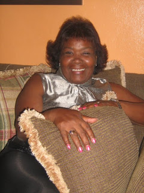
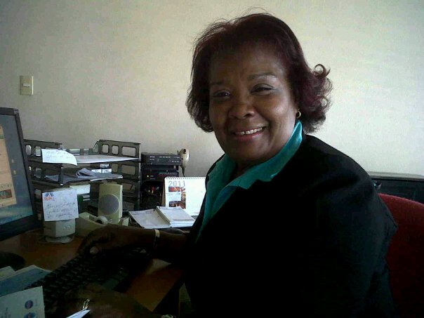
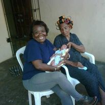
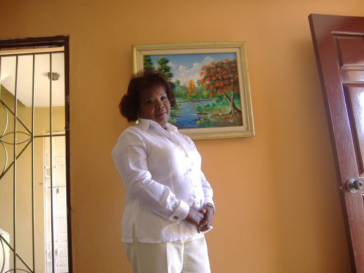
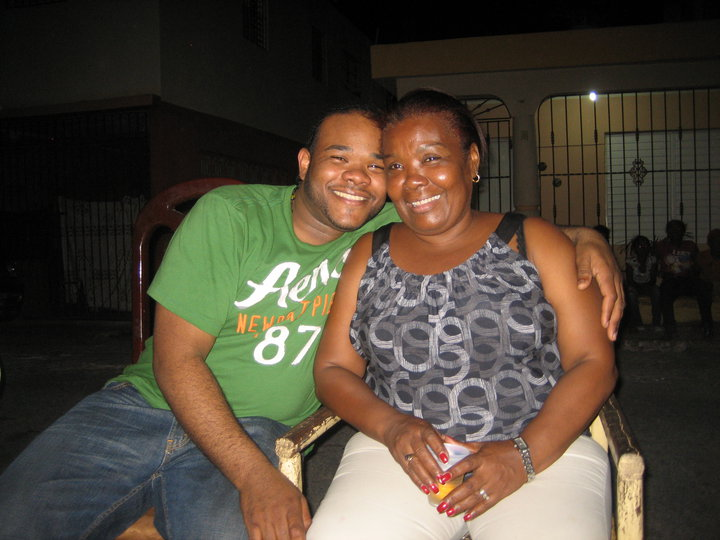
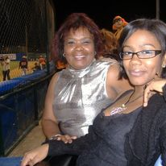
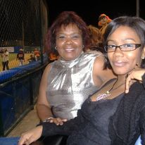
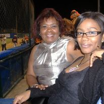

Luz Magaly Medina Angomas





 


journalist and master of ceremonies Luz Magaly Medinammm
Born in 1954, died in 2013 Luz Magaly Medina was an outstanding journalist, broadcaster and master of ceremonies who worked for many years
for the Micheli Circuit and opinion programs, as well as public relations officer for Inespre in La Romana in the past
government of
former President Hipólito Mejía and member of the Dominican Association of Journalists since its creation.
She was also the mother of
fellow broadcaster Jessica Medina and entrepreneur and software engineer Pedro Echavarria.